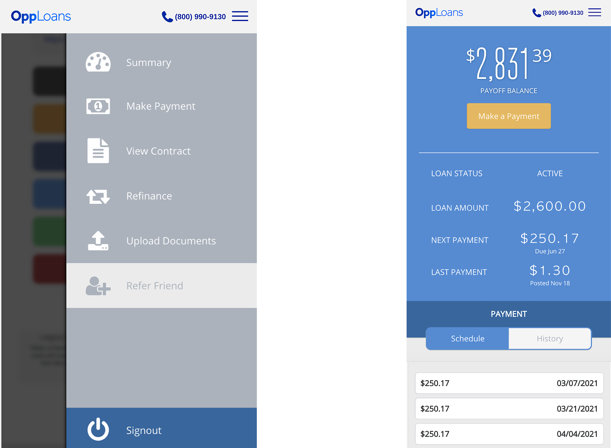
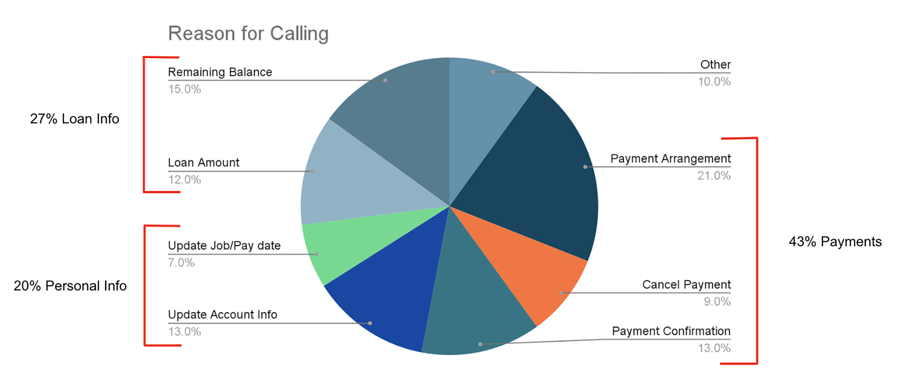
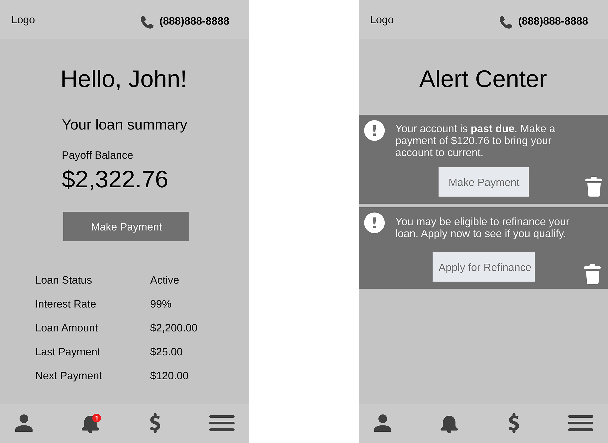

Customer Portal Redesign
Project Overview
When I joined Oppfi, the customer portal had very limited functionality and had not been redesigned since it was built. I had the opportunity to perform research into customer and business needs and make recommendations on how the portal can be improved. After these recommendations had been identified, I started to build the framework for a new, improved customer portal that would fulfill my users’ needs, and alleviate business problems.
Current Portal
My first step was to examine the current portal and lay out the functions that were available to users. This portal was causing many pain points Oppfi and their customers. There were numerous shortcomings such as users not being able to update their contact information, not being able to see when a payment was pending vs. processed, and so on.
Current functions
- View loan summary
- Make payment/view payment history
- View current loan contract
- Refinance (if eligible)
- Upload documents
- Refer a friend

Why isn't this working?
Now that I had an understanding of how the customer portal worked, I dove into some of the issues users and the business were facing.
I shadowed customer advocates who handle calls from customers, and dug through call recordings to document the reasons why customers were calling in.

On this pie chart, a total of 90% of the calls relate to self-service functions that should be available to the user in their customer portal. Not only would adding these functions serve the customer and create a superb user experience, but it would also eliminate 90% of calls the customer advocates deal with. This would free up the lines for more complicated issues and allow the customer advocates to work to their full potential.
New portal design
Now I could begin thinking about how an improved customer portal would function. I listed out all of the new functions I wanted to include to solve user pain points. I thought long and hard about the details that would need to be included in these functions and documented them.

UX architecture
I built a UX architecture of all of these new functions and the existing functions to get a big picture view of the new portal. I was very intentional in the placement of certain functions to ensure the best user experience. I chose to have the ‘Profile’ and ‘Alert Center’ live adjacent to the menu because such a large portion of user pain points relate to these functions. I placed the ‘Payments’ feature and other action-oriented functions front and center since most users log into the portal to make or view scheduled payments.

User Flow
As I was nearing the end of my internship, I decided I would like to create a user flow for the new portal. I chose a scenario where a user received an alert about a missed payment in the alert center. The user would attempt to resolve this alert by acting through the alert center.

Wireframing
I then started creating and iterating on low fidelity wireframes to follow my user flow.
The first wireframe is an illustration of the customer portal homepage. This is where the user can get a big picture view of their loan summary. The second, shows a view of the alert center where users can view their alerts and act on them if desired.

User Flow
For the ‘Make Payment’ flow I wanted to visualize several different formats this flow could take. I started off by putting all of the steps into a single page, multiple pages, and lastly a carousel.
Single page flow
The single page format was a bit condensed and some of the steps in the flow seemed to meld together. This could lead to pain points and the user getting confused.

Multiple pages
I felt as though separating the steps into different pages definitely helped create a balanced flow. A multiple page approach would also match Oppfi’s current loan application flow making the user’s overall experience more cohesive.

Carousel
I landed on a carousel that was very similar to the multiple pages approach. What made the carousel stand out was that it allowed the user to see where they were in the flow and how many more steps they needed to complete.
Conclusion
I would have loved to have been able to create usability tests for my designs and follow through with this project to development. However, my internship came to an end and I had to wrap up with wireframing. This project was an extraordinary experience that allowed me to explore new techniques and utilize my skillset. I’m thankful that I was able to work on an impactful project that would help Oppfi solve problems for their users.